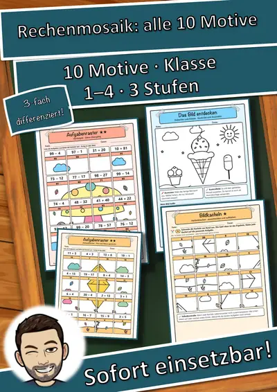
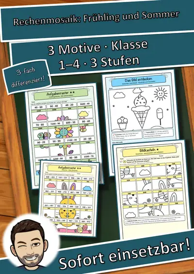
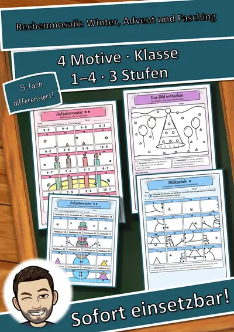
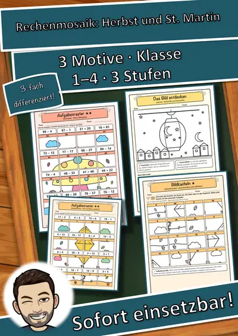
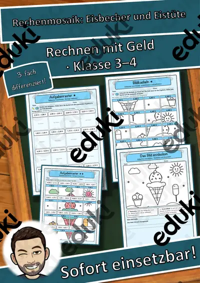
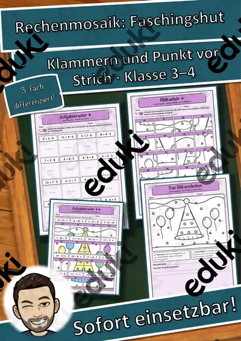
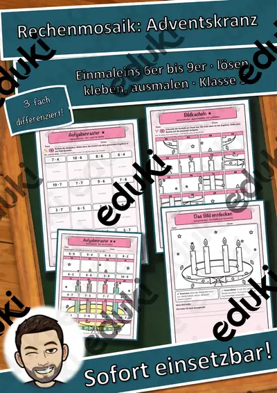
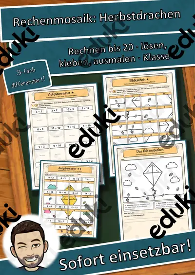

Addition und Subtraktion: Arbeitsblätter für Klasse 1–4 (Mathematik)
Addition und Subtraktion sind die ersten Rechenoperationen. Strategien wie Zerlegen, Nutzen von Nachbaraufgaben und schriftliche Verfahren bauen aufeinander auf.
Typische Bausteine der Einheit sind Plus und Minus, Zahlenmauern und Zehnerübergang; darauf aufbauend kommen Ergänzen, schriftliches Rechnen und Rechengeschichten zur Sprache.
Je nach Bundesland variiert die genaue Einordnung; üblich ist das Fach Mathematik in der Grundschule. Die Kinder rechnen sicher im Zahlenraum und erklären ihre Strategie.
Eine Reihe zu Addition und Subtraktion lässt sich so gliedern: erst Plus und Minus erarbeiten, dann Zahlenmauern anwenden, später Ergänzen und schriftliches Rechnen vertiefen. Zu jedem Material gehört eine Musterlösung, die Korrektur und Selbstkontrolle erleichtert.
Aus unserem Katalog gehören 17 Materialien zu diesem Thema, darunter Rechenmosaik Gesamtpaket: 10 Motive durch das, Rechenmosaik Paket Frühling und Sommer: 3 und Rechenmosaik Paket Winter, Advent und Fasching. Der Bestand umfasst Arbeitsblätter und Übungen und reicht über Klasse 1–4. Rechengeschichten aus dem Alltag verknüpfen Rechnung und Sachbezug.
Das gehört zum Thema
Passende Arbeitsblätter und Materialpakete

Rechenmosaik Gesamtpaket: 10 Motive durch das Schuljahr, lösen – kleben – ausmalen (Klasse 1–4)

Rechenmosaik Paket Frühling und Sommer: 3 Motive, lösen – kleben – ausmalen (Klasse 1–4)

Rechenmosaik Paket Winter, Advent und Fasching: 4 Motive, lösen – kleben – ausmalen (Klasse 1–4)

Rechenmosaik Paket Herbst und St. Martin: 3 Motive, lösen – kleben – ausmalen (Klasse 1–4)
Rechenmosaik Igel – GRATIS-Sampler: Einmaleins lösen, kleben, ausmalen in 3 Stufen (Klasse 2–3)

Rechenmosaik Eisbecher und Eistüte: Rechnen mit Geld – lösen, kleben, ausmalen in 3 Stufen (Klasse 3–4)

Rechenmosaik Frühlingsblume: Mal und Geteilt mit großen Zahlen – lösen, kleben, ausmalen in 3 Stufen (Klasse 4)

Rechenmosaik Osterhase: Plus und Minus bis 1000 – lösen, kleben, ausmalen in 3 Stufen (Klasse 3)

Rechenmosaik Faschingshut: Klammern und Punkt vor Strich – lösen, kleben, ausmalen in 3 Stufen (Klasse 3–4)

Rechenmosaik Weihnachtsbaum: Geteilt-Aufgaben (Division) – lösen, kleben, ausmalen in 3 Stufen (Klasse 3)

Rechenmosaik Adventskranz: Einmaleins 6er bis 9er – lösen, kleben, ausmalen in 3 Stufen (Klasse 3)

Rechenmosaik Schneemann: Verdoppeln und Halbieren – lösen, kleben, ausmalen in 3 Stufen (Klasse 2–3)

Rechenmosaik Laterne: Einmaleins 2er bis 5er und 10er – lösen, kleben, ausmalen in 3 Stufen (Klasse 2)

Rechenmosaik Herbstpilz: Plus und Minus bis 100 – lösen, kleben, ausmalen in 3 Stufen (Klasse 2)

Rechenmosaik Herbstdrachen: Rechnen bis 20 – lösen, kleben, ausmalen in 3 Stufen (Klasse 1)

100 Addition Übungsaufgaben (auch Homeschooling)

Kleines Einmaleins, Einmaleins Übungsaufgaben (auch Homeschooling)
Häufige Fragen
Für welche Klassenstufe passen die Arbeitsblätter zu Addition und Subtraktion?
Die 17 Materialien zu diesem Thema sind für Klasse 1–4 ausgelegt, die meisten davon für Klasse 3. Einzelne Titel lassen sich mit Anpassung auch eine Stufe darunter oder darüber einsetzen.
Welche Inhalte decken die Materialien zu Addition und Subtraktion ab?
Die Materialien arbeiten an Plus und Minus, Zahlenmauern und Zehnerübergang und gehen dann weiter zu Ergänzen, schriftliches Rechnen und Rechengeschichten. Vorab lohnt ein Blick in den Lehrplan des eigenen Bundeslandes.
Wie setze ich Addition und Subtraktion im Unterricht ein?
Rechengeschichten aus dem Alltag verknüpfen Rechnung und Sachbezug. So entsteht aus den Blättern eine kleine Einheit, die sich auf zwei bis drei Stunden verteilen lässt.
Mehr Material nach Fach und Klasse
Verwandte Lehrplanthemen
- Das kleine Einmaleins (Mathematik, Klasse 2–4)
- Geometrie: Körper, Flächen und Formen (Mathematik, Klasse 1–6)
- Größen, Einheiten und Uhrzeit (Mathematik, Klasse 2–6)
- Jahreszeiten (Sachunterricht, Klasse 1–4)
- Zahlenraum und Stellenwerte (Mathematik, Klasse 1–4)